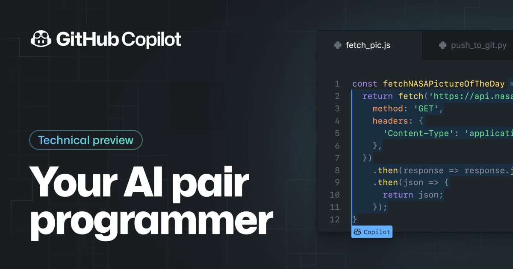
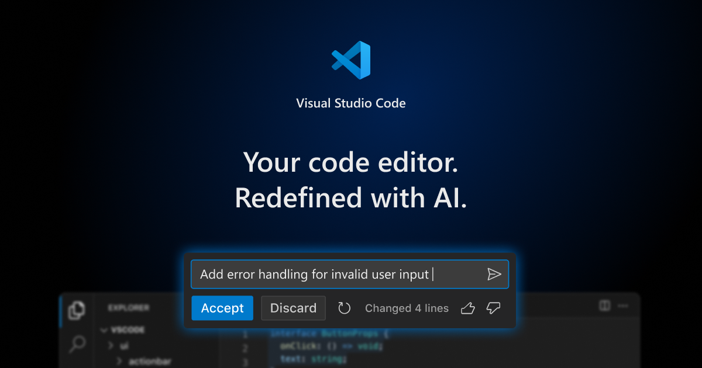
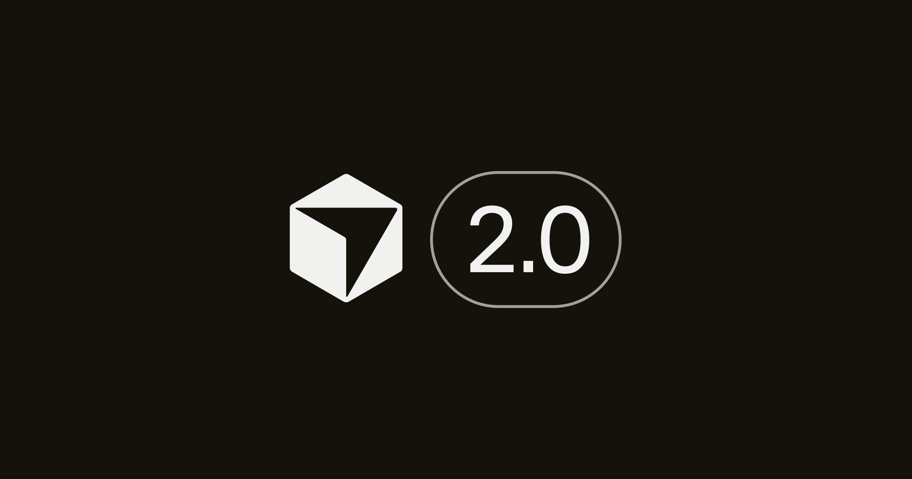

Saturday · Business
Cursor: a case in developer tools
Anysphere put the model inside a fork of the editor. Copilot had already taught autocomplete; the fight was over who owned the rest of the session.

This is a product case, not a valuation story. Figures appear only when a named public source states them: TechCrunch (11 October 2023) for the seed; Bloomberg as reported by TechCrunch (5 June 2025) for a later round; Cursor’s own 14 August 2026 post and SpaceX’s Form 8-K the same day for the close. Annual recurring revenue after 2023, headcount, and culture slogans that are not on those pages are omitted. Founder portraits are omitted.
Select any words, or tap a dotted term.
- 2021 Copilot preview 29 June: GitHub and OpenAI launch Copilot as a technical preview — autocomplete inside the editor you already have.
- 2022 Copilot ships / Anysphere 21 June: Copilot is generally available. Anysphere is incorporated the same year by four MIT classmates.
- 2023 The fork 6 April: Cursor 0.2.0 changelog — they move onto a fork of VSCodium. 11 October: $8 million seed, OpenAI Startup Fund (TechCrunch).
- 2024–25 The category fills Other AI editors and agents appear. Microsoft’s own VS Code pages begin to sell “redefined with AI.”
- 2025 2.0 / Composer 29 October: Cursor’s blog announces version 2.0 and Composer, its first coding model, plus a multi-agent interface.
- 2026 A new owner 14 August: Cursor’s blog — “Cursor is now a part of SpaceX.” SpaceX’s 8-K files the merger the same day.
Before
Autocomplete already had an owner
On 29 June 2021 GitHub and OpenAI put a technical preview in and called it : “your AI pair programmer.” The GitHub Blog is the source. The model was OpenAI Codex. The gesture was new enough to need a slogan and old enough to fit an slot — suggest the next line, the next function, while you stay in the editor you already paid for with attention.

On 21 June 2022 became generally available to individual developers. The 2022 GitHub post — still on github.blog — priced it at $10 a month or $100 a year, free for verified students and maintainers of popular open-source projects. Microsoft already distributed the host. Stack Overflow’s 2023 Developer Survey, as TechCrunch cited it that October, had about 73 percent of respondents in . The incumbent did not need to invent a window. It already had the window.
ChatGPT opened to the public in November 2022. By early 2023 “AI plus coding” was a category investors could say aloud. The default picture was still autocomplete. Aman Sanger, one of Anysphere’s four co-founders, told TechCrunch so in October 2023: when people think of AI and coding, “their mind usually goes to AI-powered autocomplete,” and “this has been done particularly well by and others.” The rest of the sentence is the case: they would aim at what came after autocomplete — bugs, questions about a whole codebase, edits that crossed files.
The era
Own the window, then fill it
was incorporated in 2022. TechCrunch’s 11 October 2023 piece names the founders — Michael Truell (CEO), Sualeh Asif, Arvid Lunnemark, Aman Sanger — as MIT classmates who wanted an that could take over the dull parts of building software. The first public product decision that still sits on their site is dated 6 April 2023. Changelog 0.2.0: they left a CodeMirror editor and “transitioned to building on top of a of .” The goal, in their words, was “an optimized for pair-programming with AI.”

A is not a metaphor. VS Code’s editor is MIT-licensed. is that code without Microsoft’s badges. By shipping a , could change keybindings, chat, multi-file edits, and later agents without waiting on an API. Truell told TechCrunch that Microsoft was the main competitor, and that a wide user base made radical change slow. That is a founder’s argument, on the record, in 2023. It is not a proof that Microsoft could not move. The later page above is evidence that it did.
On 11 October 2023 announced an $8 million seed led by the , with Nat Friedman and Arash Ferdowsi among the angels. TechCrunch is the named source. The same article says total capital raised reached $11 million, that Truell put already over $1 million, and that “tens of thousands of people” were on the platform. Those are the last user and revenue numbers this capsule will treat as checkable for the early period. Later press figures often arrive as “sources told.” They are omitted.
Look outward from the same years, not only at one startup. was already a Microsoft product. Other editors and agents — Windsurf among them — filled the same shelf. TechCrunch’s 5 June 2025 story, reporting a Bloomberg account of Anysphere’s next large round, also states that OpenAI had bought Windsurf. This capsule does not invent a ranking. It notes that by mid-decade the category was no longer a two-firm cartoon.
On 5 June 2025 TechCrunch, citing Bloomberg, reported that had raised $900 million at a $9.9 billion valuation, led by Thrive Capital, with Andreessen Horowitz, Accel, and DST Global participating. The article is a named public source. Treat the dollars as a reported round, not as a measure of how the editor feels to use.

2.0, on the company’s blog of 29 October 2025, is the product’s own account of the turn from “pair programmer in the gutter” to “agents in parallel.” is described there as a low-latency model for agentic coding; the new layout is “centered around agents rather than files”; git worktrees or remote machines keep those agents from stepping on each other. That is what they shipped and how they described it. Independent benchmarks are not in this capsule because this capsule did not run them.
People
Four classmates, an incumbent, and a substrate
Michael Truell, Sualeh Asif, Arvid Lunnemark, Aman Sanger
Anysphere, founded 2022
Named as the four MIT co-founders in TechCrunch, 11 October 2023. Truell is quoted as CEO. Sanger is the one who says already won autocomplete. This capsule does not invent titles for the other two, or a culture deck, or a photograph. The public record used here is the interview and the changelog.
GitHub Copilot
Preview 2021 · GA 2022
The product that defined the first mass market for AI-in-the-editor. GitHub’s own posts are the dates. It began as an . It had Microsoft’s distribution. Cursor’s early pitch, on the record, is that the interesting work started after Copilot’s first trick.
Visual Studio Code
Open-sourced 2015; still the host
The editor most of the category is standing on. forked a build of it. plugged into it. Microsoft’s 2026 marketing page now sells as “redefined with AI.” The substrate is not a neutral pipe. It is a competitor that already had the users.
After
The editor gets a parent
On 14 August 2026 Cursor’s blog stated that the company “has officially been acquired by SpaceX,” completing a process the post says began in April with a SpaceXAI partnership. The post talks about GPUs and about keeping the work familiar. It does not print a price.
SpaceX’s Form of the same date does. Merger of a subsidiary, X67 Inc., into ; survives as a wholly owned subsidiary; outstanding common and preferred convert into SpaceX Class A shares “based on an implied equity value of of $60.0 billion.” That sentence is a filing, not a feature. Two days later this capsule can say the owner changed. It cannot yet say what that does to the editor.
The product insight that made the case is older than the . Autocomplete was a . The session — files, terminal, review, agents — is an editor. Whoever ships the window sets the defaults. That was true when rented space in . It is still true when the window has a new parent.
A question
Leave this on the table
If the valuable object is no longer the next line of code but the session that produces the repository, who should own the window — the model lab, the editor, or the company that already has the developers?
Fun fact
The product decision is in the changelog
On 6 April 2023, Cursor’s public changelog for version 0.2.0 says they had “transitioned to building Cursor on top of a fork of VSCodium, moving away from our previous Codemirror-based approach.” The sentence is not a manifesto. It is a shipping note. The business case — own the editor, not the plugin slot — is already in that line, months before the seed announcement.